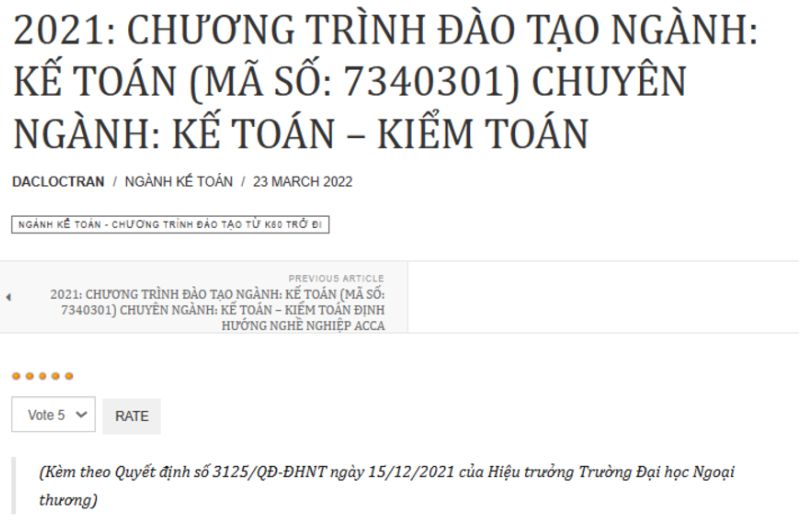

Tài nguyên học tập và chứng chỉ
- Các khóa học online: Bạn có thể tìm các khóa học về kế toán trên các nền tảng học trực tuyến như Coursera, Udemy, LinkedIn Learning. Các khóa học này sẽ giúp bạn nắm vững các kiến thức cơ bản đến nâng cao về kế toán, thuế, kiểm toán, và các phần mềm kế toán phổ biến.
- Sách chuyên ngành:
- "Kế toán tài chính" của Nguyễn Văn Đoàn: Cung cấp kiến thức cơ bản về kế toán tài chính và các phương pháp ghi nhận, xử lý giao dịch tài chính.
- "Kế toán quản trị" của Lê Xuân Thành: Hướng dẫn cách sử dụng thông tin kế toán để ra quyết định quản trị trong doanh nghiệp.
- "Financial Accounting" của Jerry J. Weygandt, Paul D. Kimmel, và Donald E. Kieso: Đây là một cuốn sách kinh điển trong lĩnh vực kế toán tài chính, giúp bạn hiểu sâu về các chuẩn mực kế toán quốc tế.
Financial Accounting của tác giả Jerry J. Weygandt, Paul D. Kimmel, và Donald E. Kieso
Các tổ chức nghề nghiệp
- Các trang web tuyển sinh của các trường đại học có ngành Kế toán như NEU, FTU, UEB - ĐHQGHN, UEH,...
- Hiệp hội Kế toán và Kiểm toán Việt Nam (VAA): Cung cấp các tài nguyên, hội thảo, và chương trình đào tạo về kế toán, kiểm toán, cũng như những thay đổi trong các quy định pháp lý liên quan đến nghề nghiệp.
- Cộng đồng kế toán trên mạng xã hội: Các nhóm trên Facebook, LinkedIn, Reddit, hay các diễn đàn như AccountingCoach là nơi bạn có thể tìm thấy các bài viết chia sẻ kinh nghiệm, thảo luận các vấn đề chuyên môn, và học hỏi từ các chuyên gia trong ngành.

Cộng đồng Accounting trên nền tảng Reddit, thành lập từ năm 2009
Chương trình thực tập và trao đổi nghề nghiệp
- Hội thảo và sự kiện nghề nghiệp: Tham gia các hội thảo, sự kiện ngành kế toán, hoặc các cuộc thi tài chính là cơ hội tốt để học hỏi, giao lưu và tìm hiểu thêm thông tin về ngành kế toán

Chương trình đào tạo thực tập kế toán